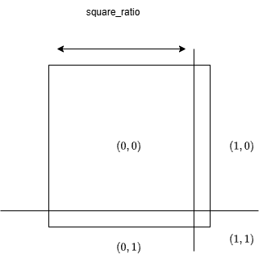
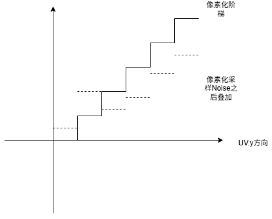
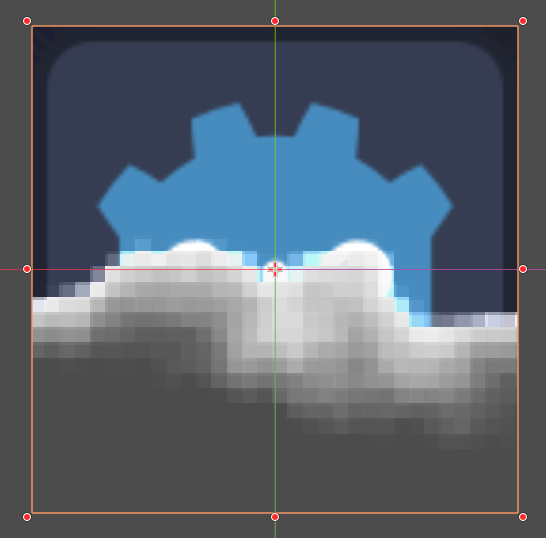
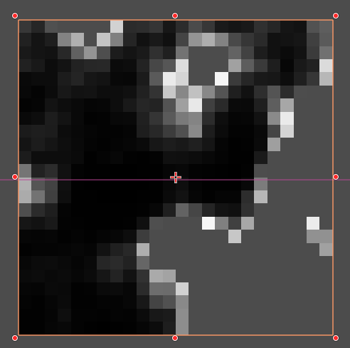
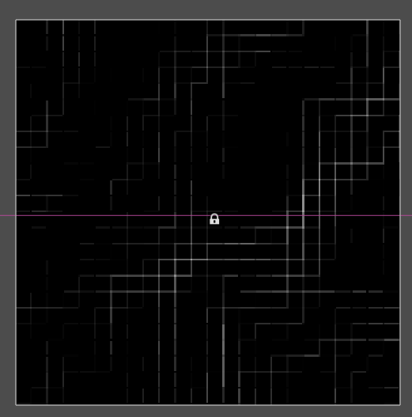
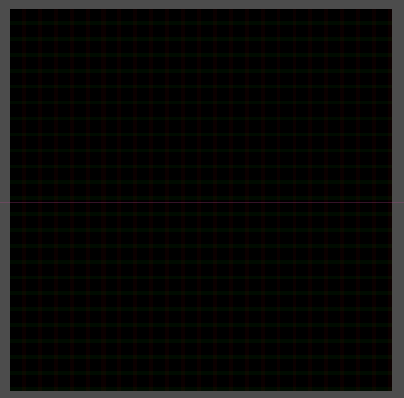
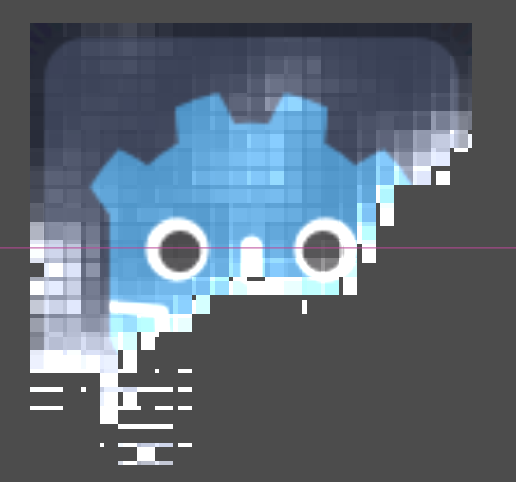

01UV坐标操控
像素化消融
本文主要记录复刻如下像素化消融shader的过程要点。
感觉作为一个练习来说很不错，下面主要是直接复刻思考的方式。最后发现教程来自于一个UE5教程，并且使用了自发光等。
像素化
我想法第一步是创建像素化效果，这个方式来跟2D教程中的像素画一致。这里观察到像素画有一条西边于是，用类似的取整方式截取了一段。代码如下：
uniform float square_ratio = 0.8; // 画出一个
uniform float pixel_num = 32;
void fragment() {
vec2 square_size = vec2(square_ratio);
vec2 pixel_num_size = vec2(pixel_num);
vec2 int_pos;
vec2 pixel_uv = modf(UV*pixel_num_size,int_pos);
vec2 mask_uv = (int_pos+floor(pixel_uv/square_size)*square_size)/pixel_num_size;
float noise_mask = texture(noise_tex,mask_uv).r;
}这段分为两部分
- 一部分是在$0 \to 1$的范围内根据
square_ratio划分出如下图区域：

这部分跟像素化方式类似，先除以square_ratio=0.8放大范围，再使用floor,ceil映射到整数区域，这样就可以划分出四个区域以及边界如图。
- 第二部分是将上面的整个区域往复平铺到整个图区域
这里的方式，就是UV乘以pixel_num_size=32将UV从$0 \to 1$变成$0 \to 32$。然后再取余数部分，这样相当于构成了$32*32$个$0 \to 1$范围的小方格，每个小方格内在在进行第一步操作的划分。
方向溶解
方向溶解过程跟基础溶解结构类似，只是这里添加噪音溶解的UV坐标需要用像素化之后的坐标值。
- 采样噪音用像素化的值
- 叠加噪音也用像素画的值
void fragment() {
float noise_mask = texture(noise_tex,mask_uv).r;
// y轴方向叠加
float y_range_noise = noise_mask*(1.0-line_ratio)+mask_uv.y*line_ratio;
// 方向step溶解
float range_mask = smoothstep(y_range_ratio,y_range_ratio-smooth_gap,y_range_noise); // 上方为空);
}
颜色过渡
看视频，整个消失溶解有一个从无到白色，最后在落成原始贴图的过程。我这里想法就是边缘部分先白色显示，然后逐步过渡到原始颜色，使用mix混合来过渡。
void fragment() {
COLOR.rgb = mix(vec3(10.0),ori_color.rgb,range_mask);
}最终呈现出来的效果如下：

看教程查缺补漏
可以看到整体效果跟原视频，教程差异还是很大，虽然有像素化消融部分但质感还是差很多。其中主要有两部分
- 原视频线会先出来，再出来块
- 原视频出现白色部分会更亮，然后过渡更自然，而不是白色糊成一坨
颜色与自发光
教程中的描边不是直接在过渡区域上叠加而是采用了一种减法加ceil过滤的方式
void fragment() {
float alpha_mask = noise_mask - y_range_ratio;
float alpha = ceil(alpha_mask);
}设噪音贴图的采样值为$v_{noise}$
- 当$y>v_{noise}$时为大于0的值，
ceil给出1 - 当$y\le v_{noise}$时为小于等于0的值，
ceil给出0
这个跟硬边溶解等价，但据说效率比step要高很多。而且这个方式留下的alpha_mask值，可以来做高亮描边。高亮方式如下：
void fragment() {
// 亮边叠加
float edge_mask = pow((1.0-alpha_mask),edge_power);
COLOR.rgb = edge_mask*edge_color;
}pow((1.0-alpha_mask),edge_power)
- 对于
alpha_mask<0区域来说，值大于1，幂运算后会放大整个数值，但这部分因为alpha裁剪实际上显示透明颜色。 - 对于
alpha_mask=1区域来说，值等于0，幂运算后还是0，这部分区域就会是恒黑色。 - 对于
alpha_mask>0区域来说，值为一个小数，幂运算会让这部分差异放大化，简单说拉直，接近1的部分会更陡峭，保持原有色彩。
最后像素化效果如下

可以看到边界上的颜色变化更加明显。
栅格化叠加
我之前的想法是，$0 \to 1$范围内切出带边的图，然后平铺。但这样实际有个问题，就是采样的点依然是，同一个噪音图上比较相近的位置。
教程用的方式其实更简单直接，平移整个像素图，然后相减，就可以得到一个边缘。而且采用叠加值的方式来描出边缘。
平移像素图，通过平移UV来实现，给UV叠加一个数值之后，色素块采样颜色不变，会平移一点距离。这样就在边界之处产生数值差缝隙，其效果如下：
void fragment() {
vec2 pixel_uv = floor(UV*pixel_num_size)/pixel_num_size;
vec2 pixel_offset_uv = (floor((UV+vec2(pixel_offset))*pixel_num_size))/pixel_num_size;
float noise_mask = texture(noise_tex,pixel_uv).r;
float noise_offset_mask = texture(noise_tex,pixel_offset_uv).r;
COLOR.rgb = vec3((noise_mask-noise_offset_mask)*line_strength);
}其整个效果如下：

如果采用全局消融的方式，这里可以考虑直接叠加noise的方式。 如果采用方向消融的方式，这里筛选出线的位置的UV差异值了，因为像素化，这个边缘线的UV插值是固定的，来自于像素块的大小，如下图：

溶解叠加
最后就是叠加方向溶解。方向溶解一定要叠加对应方向上的梯度，就是叠加UV.y。因为教程里面用的边缘发光是幂指数，所以溶解方式用直接叠加梯度溶解。即
void fragment() {
vec2 pixel_uv = floor(UV*pixel_num_size)/pixel_num_size;
vec2 pixel_offset_uv = (floor((UV+vec2(pixel_offset))*pixel_num_size))/pixel_num_size;
vec2 pixel_final_uv = pixel_uv+(pixel_offset_uv-pixel_uv)*line_strength;
float noise_mask = texture(noise_tex,pixel_final_uv).r;
// 上面为1 下面为0 这样随着y_range_ratio 减少 画面逐渐出现
// 需要clamp一下，因为随着y_range_ratio 减成负数 会使得 alpha_mask大于1 而显示黑色
float alpha_mask = clamp(noise_mask + (1.0-pixel_uv.y) - y_range_ratio,0.0,1.0);
// 亮边叠加
float edge_mask = pow((1.0-alpha_mask),edge_power);
COLOR.rgb = edge_mask*edge_color+ori_color.rgb;
COLOR.a = ceil(alpha_mask);
}其中溶解部分就是基础的方向溶解梯度添加，可以通过mix混合控制其方向性。最终效果如下：

不过这里哟古额比较奇怪的地方就是对于线条部分用的是UV偏移采样，使得这些区间值略不一样。如果从消融考虑，要让线完全出现在面之前，可能直接叠加在数值上会更好。测试了一下效果，最终表现是，先有边框再有面。整个感觉略有不同。